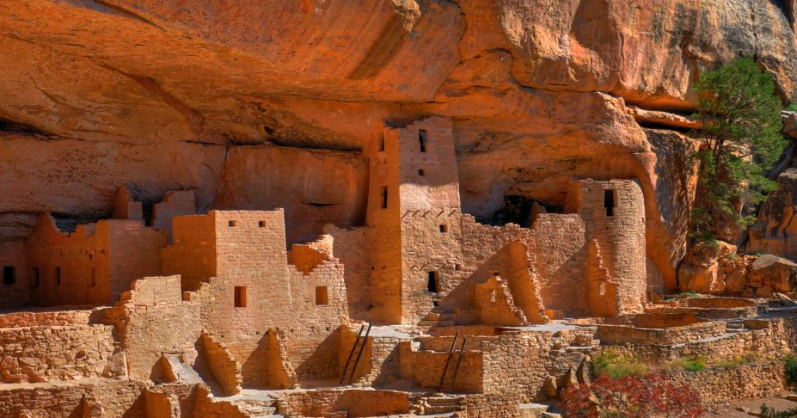
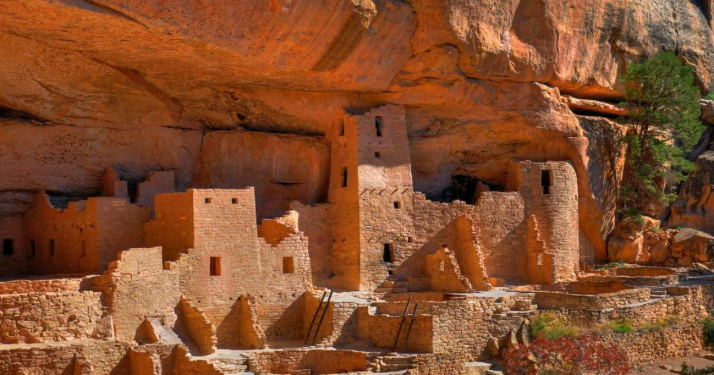

Amercia's Dawn
Imagine going back 2.4 million years in time. It was an incredible period known as the Great Ice Age, or the Pleistocene Epoch. The Earth was experiencing some major changes, and one of the most significant ones was the rise and fall of gigantic ice sheets and glaciers.
One of the significant consequences of the Great Ice Age was the formation of land bridges, which connected previously isolated landmasses and facilitated the migration of various organisms between continents. The most notable land bridge formed during this period was the Bering Land Bridge, connecting Asia and North America.

The formation of the Bering Land Bridge was a game-changer for the plants, animals, and people living in Asia. It's believed that our early ancestors, who lived in Asia, crossed over into North America using the Bering Land Bridge. It was like building a highway for them to travel and explore new lands.
 


natives.
natives
natives